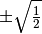

MCSCF¶
Performs RHF/UHF/ROHF/TCSCF and more general MCSCF computations. Called as the starting point for multireference coupled cluster computations.
General¶
CANONICALIZE_ACTIVE_FAVG¶
Do canonicalize the active orbitals such that the average Fock matrix is diagonal?
- Type: boolean
- Default: false
CANONICALIZE_INACTIVE_FAVG¶
Do canonicalize the inactive (DOCC and Virtual) orbitals such that the average Fock matrix is diagonal?
- Type: boolean
- Default: false
CI_DIIS¶
Do use DIIS extrapolation to accelerate convergence of the CI coefficients?
- Type: boolean
- Default: false
DIIS¶
Do use DIIS extrapolation to accelerate convergence of the SCF energy (MO coefficients only)?
- Type: boolean
- Default: true
DIIS_MAX_VECS¶
Maximum number of error vectors stored for DIIS extrapolation
- Type: integer
- Default: 7
D_CONVERGENCE¶
Convergence criterion for density.
- Type: conv double
- Default: 1e-6
E_CONVERGENCE¶
Convergence criterion for energy.
- Type: conv double
- Default: 1e-6
FAVG_START¶
Iteration at which to begin using the averaged Fock matrix
- Type: integer
- Default: 5
FOLLOW_ROOT¶
Which solution of the SCF equations to find, where 1 is the SCF ground state
- Type: integer
- Default: 1
FORCE_TWOCON¶
Do attempt to force a two configruation solution by starting with CI coefficents of  ?
- Type: boolean
- Default: false
INTERNAL_ROTATIONS¶
Do consider internal rotations?
- Type: boolean
- Default: true
LEVEL_SHIFT¶
Level shift to aid convergence
- Type: double
- Default: 0.0
REFERENCE¶
Reference wavefunction type
- Type: string
- Possible Values: RHF, ROHF, UHF, TWOCON, MCSCF, GENERAL
- Default: RHF
TURN_ON_ACTV¶
- Type: integer
- Default: 0
Expert¶
ROTATE_MO_ANGLE¶
For orbital rotations after convergence, the angle (in degrees) by which to rotate.
- Type: double
- Default: 0.0
ROTATE_MO_IRREP¶
For orbital rotations after convergence, irrep (1-based, Cotton order) of the orbitals to rotate.
- Type: integer
- Default: 1
ROTATE_MO_P¶
For orbital rotations after convergence, number of the first orbital (1-based) to rotate.
- Type: integer
- Default: 1
ROTATE_MO_Q¶
For orbital rotations after convergence, number of the second orbital (1-based) to rotate.
- Type: integer
- Default: 2